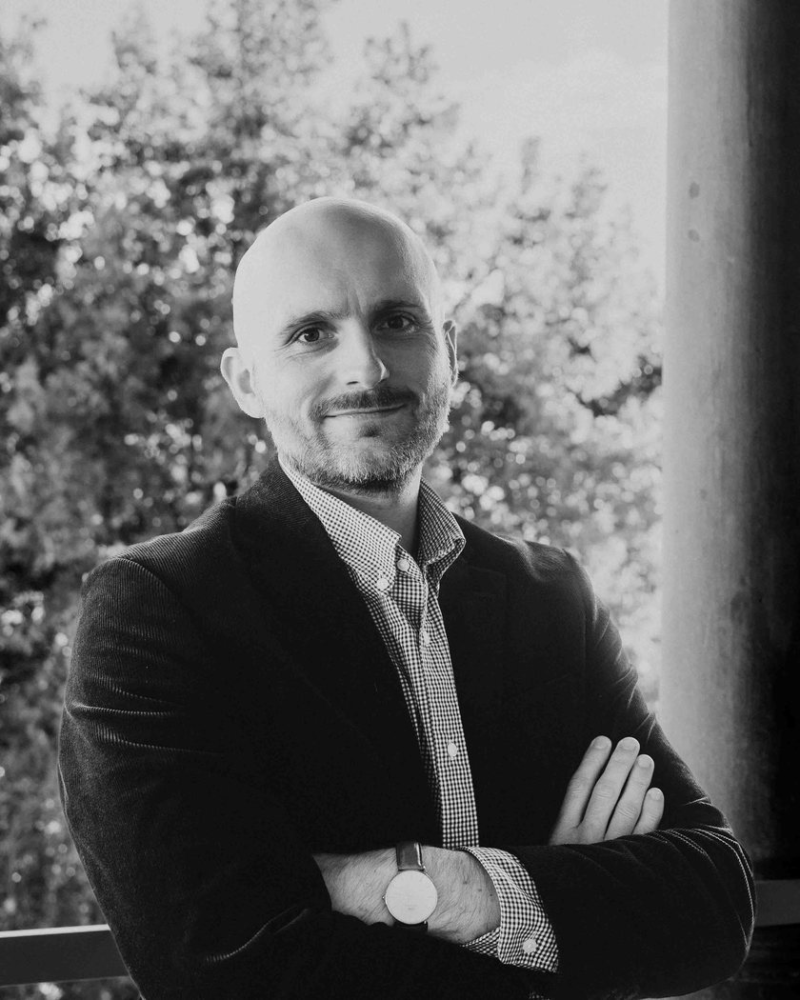

Flavien Ganter
Sociologist and Applied Statistician Sociologue et statisticien appliqué
Max Weber Postdoctoral Fellow
European University Institute
Chercheur postdoctoral & Max Weber Fellow
Institut universitaire européen

AboutÀ propos
I am a sociologist and an applied statistician, currently a Max Weber Postdoctoral Fellow at the European University Institute (eui) in Florence, funded by the Kohli Foundation for Sociology. I received my Ph.D. in Sociology from Columbia University in 2025, and I also graduated from the École normale supérieure at Paris-Saclay and the École nationale de la statistique et de l’administration économique (ensae).
Je suis sociologue et statisticien, actuellement chercheur postdoctoral et Max Weber Fellow à l’Institut universitaire européen (eui) de Florence, grâce au soutien de la Kohli Foundation for Sociology. Docteur en sociologie de l’université Columbia (New York), je suis aussi un ancien élève du département de sciences sociales de l’École normale supérieure de Paris-Saclay et ingénieur économiste-statisticien de l’École nationale de la statistique et de l’administration économique (ensae).
Broadly, I am interested in ethnoracial and national boundaries in the United States and in Western Europe, which I have studied through projects investigating the criminal justice system, immigrants’ integration, Mexican immigration to the U.S., and perceptions of diversity, among other topics. My current research uses original experiments and census data to explore how social cleavages that cut across ethnoracial categories reshape ethnoracial boundaries in the United States.
Comme chercheur, je m’intéresse à la dynamique des frontières ethno-raciales et nationales aux États-Unis et en Europe de l’Ouest, que j’étudie dans des projets relatifs à la justice pénale, à l’intégration des immigrés, à l’immigration mexicaine aux États-Unis et aux perceptions de la diversité, entre autres. Mes recherches actuelles mobilisent des expériences originales et des données de recensement pour explorer comment les clivages sociaux qui traversent les catégories ethno-raciales reconfigurent les frontières ethno-raciales aux États-Unis.
My research in applied quantitative methodology is broadly interested in statistical modelling, experimental design, and computational methods.
Mes travaux en méthodologie quantitative appliquée portent sur la modélisation statistique, le design expérimental et les méthodes computationnelles.
My work has been published in Political Analysis, in the Proceedings of the National Academy of Sciences, in International Migration Review, and in Socius, among other journals.
Mes travaux ont notamment été publiés dans Political Analysis, les Proceedings of the National Academy of Sciences, l’International Migration Review et Socius.
- Race, ethnicity & migration
- Social stratification
- Cultural sociology
- Quantitative methodology
- Race, ethnicité & migrations
- Stratification sociale
- Sociologie de la culture
- Méthodologie quantitative
ResearchRecherche
Peer-reviewed articlesArticles à comité de lecture* Equal co-authorship* Égale contribution
-
Forth.À paraître
Network Externalities, Community Structure and Inequality in Migration Diffusion: Evidence from Mexico–U.S. Migration in 1965–2018
Flavien Ganter andet Filiz Garip. American Behavioral Scientist.
-
Forth.À paraître
Same Place, Same Consequences? Local Context and Educational Attainment among Children of Immigrants and Natives in France
Francisco Lara-García, Flavien Ganter, andet Andreas Wimmer. International Migration Review.
-
2023
Flavien Ganter. Political Analysis 31(1): 98–112.
Pre-printPré-publication Appendix Replication codeCode de réplication conjacp R functionFonction R conjacpAwardClifford Clogg Award, Best Graduate Student Paper · ASA Methodology · 2022
PrixPrix Clifford Clogg, meilleur article de doctorant·e · Section Méthodologie de l’ASA · 2022
-
2023
Maria Abascal, Flavien Ganter, andet Delia Baldassarri. Socius: Sociological Research for a Dynamic World 9.
-
2022
Know it when you see it? The qualities of the communities people describe as
diverse
(or not)Maria Abascal* andet Flavien Ganter*. City & Community 21(4): 314–339.
-
2021
The cumulative risk of jail incarceration
Bruce Western, Jacklyn Davis*, Flavien Ganter*, andet Natalie Smith*. Proceedings of the National Academy of Sciences 118(16).
Work in progressTravaux en cours
-
Under reviewEn cours d’évaluation
Perceived Social Distance, Symbolic Boundaries, and Everyday Classifications: The Imagined Topography of the Social Space in the United States
Flavien Ganter.
-
In prep.En prép.
Laying the Tracks: Selectivity of Pioneer Migrants and Diffusion of Mexico–U.S. Migration
Filiz Garip andet Flavien Ganter.
-
In prep.En prép.
The Long Road to Spatial Assimilation: Long-Term Residential Trajectories of Immigrants in France, 1975–2022
Flavien Ganter andet Sorana Toma.
-
In prep.En prép.
Relational Clustering without Unit-Level Identification
Flavien Ganter.
-
In prep.En prép.
Uncovering Mechanism Heterogeneity in Diverse Populations: A Framework
Flavien Ganter.
-
In prep.En prép.
Cross-Cutting Social Cleavages, Perceived Intra-Group Heterogeneity, and Ethnoracial Boundaries in the United States
Flavien Ganter.
-
In prep.En prép.
Immigration Replenishment, Residential Segregation, and the Reconfiguration of Ethnoracial Boundaries in the United States
Flavien Ganter.
Popular scienceVulgarisation scientifique
-
2017
Les sciences sociales face aux phénomènes de radicalisation
Flavien Ganter. Regards croisés sur l’économie 20(1): 132–135.
-
2016
L’économie au secours du politique ? Éditorial
Flavien Ganter andet Sébastien Grobon. Regards croisés sur l’économie 18(1): 7–9.
-
2016
Comment les électeurs décident-ils ? Les approches sociologiques du vote
Flavien Ganter. Regards croisés sur l’économie 18(1): 165–169.
Contact
Badia Fiesolana
Via dei Roccettini 9
50014 San Domenico di Fiesole (FI)
Italia